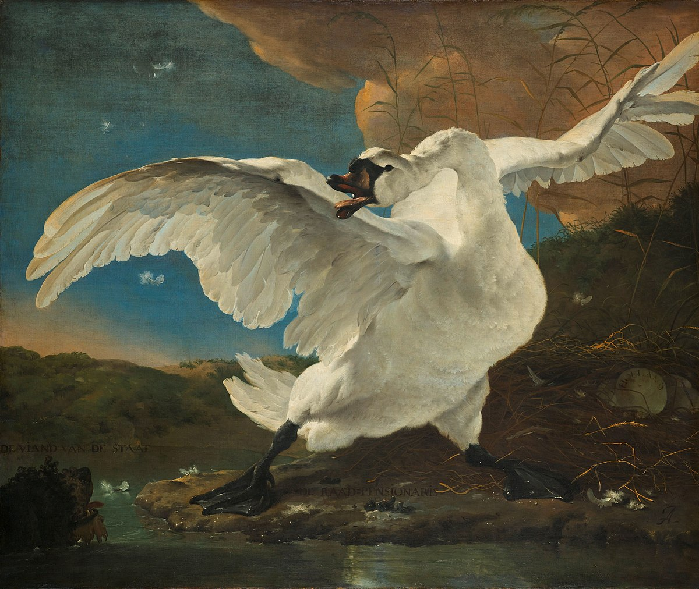

Preface
Engineering student with a variety of backgrounds ranging from fundamentals in programming, functional mastery of digital platforms or the use of office functional mastery of digital platforms or use of office software to studies in letters or some mathematical knowledge. mathematical knowledge. Strongly disposed to problem solving, learning, study and interest in various branches or fields of knowledge. various branches or fields of knowledge.
Experience
Counting on little or almost null certifiable work experience, I have made fervent participations leading the development of intermediate projects in programming, developments in archival management, in slight competences related to the mastery of the second language or expressive ability of the native one, and also in function of technical studies: shrewd performances in fields related to loyalty, sales and even administration or related. So as far as my learning skills, adaptability and other skills are concerned.

The Threatened Swan by Jan Asselijn